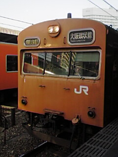
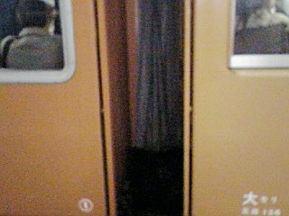
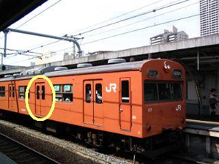
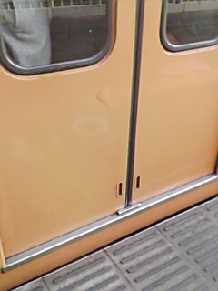
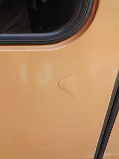

１０ヶ月前に掲載した携帯で撮った103を紹介しましたが、動画を掲載しそこねてました。
ちゅうことで、画像は前回掲載と同じで、動画のみ追加しました。
在りし日のオレンジの103-1を堪能しておくれ


正面から。朝８時の京橋駅で何やってるのか私。
（クリックで動画再生。この動画は朝８時の天満駅。鉄子の努力が滲む作品です。
QuickTimeか最新RealPlayerでないとみれないカモ。）

103-1（右：一両目）と左の二両目の色はこんなに違います。103-1は、オレンジというより肌色です。ほぼ。
で、注目すべきが、103-1の向かって左の前から２つめのドアです。

103-6xの写真ですが、103-1のこの扉にご注目。

見えます？小さな傷。

さらに拡大（朝の天満駅で乗り込む直前に撮影）
尼ヲタがいつもいうように「今撮っておかないと後悔する！」というのがこのことなんですね。
貴重なオレンジの103-1の資料になっちまいましたねぇ。しみじみ。
103-1、今はこの傷も治してもらって阪和線で活躍しているのでしょう。
ちょっと感傷的な鉄子でした
都島